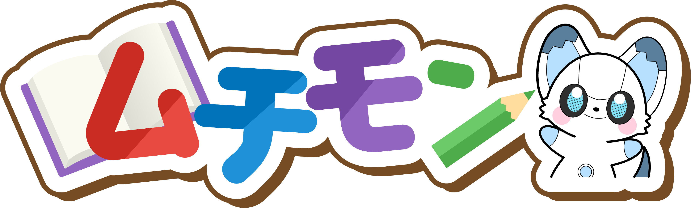
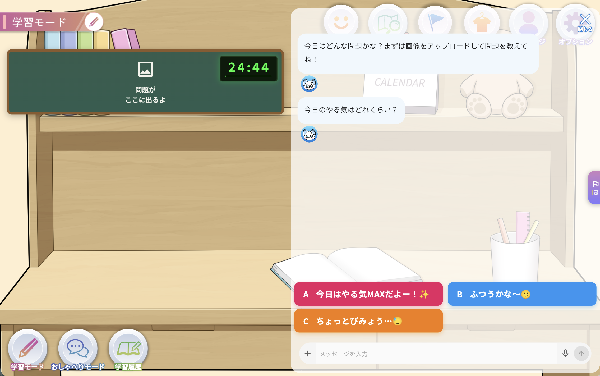
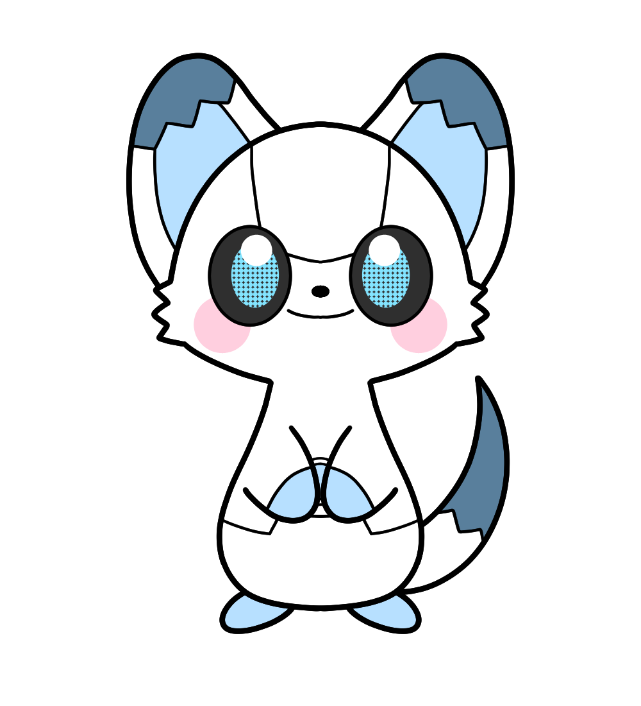
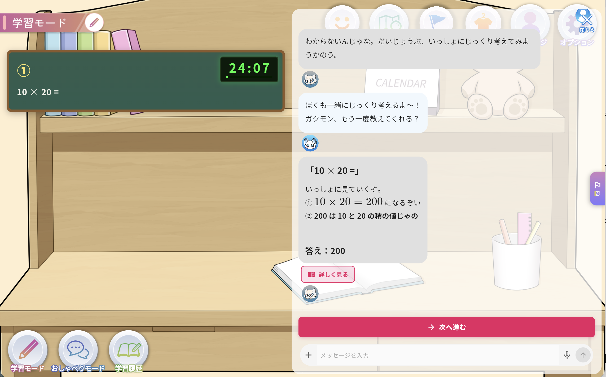
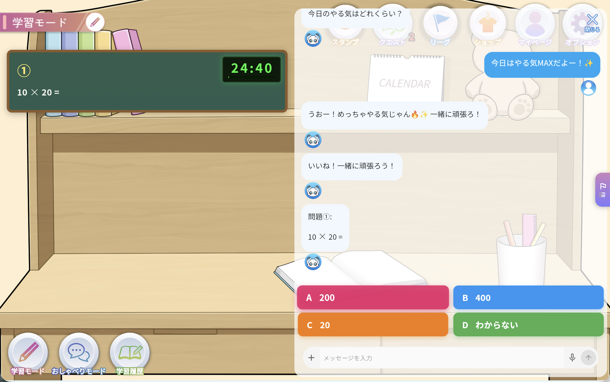

宿題があるのに、家でやらない
「あとでやる」と言うけれど、結局そのまま。毎日同じことを注意するのに疲れてしまう。

小学4〜6年生の家庭学習に、AIの伴走者を。
ムチモン学習伴走AI
宿題をやらない。声をかけても「あとで」。
ムチモンが会話で取り組みを促し、解説や類似問題で、毎日の家庭学習を支えます。保護者だけで抱え込まない、学習習慣づくりへ。
サービスリリース前・公式LINEで公開をお知らせ


リリース前に登録して、公開日や使い方の案内を受け取れます。
友だち追加通知を受け取る→毎日の宿題、こんなことはありませんか？
「あとでやる」と言うけれど、結局そのまま。毎日同じことを注意するのに疲れてしまう。
見てあげたい気持ちはあるのに、うまく伝わらない。家事や仕事で、ずっと隣にいるのも難しい。
宿題に取り組まない理由も、家での様子も、先生にどう伝えればよいか分からない。
保護者だけが、頑張らなくていいように
ムチモンは、いつもの宿題と一緒に使うAI学習伴走サービス。保護者の声かけだけに頼らず、子どもが家庭で学習を行う習慣づくりを支えます。
キャラクターとの気軽なおしゃべりから学習へ。注意されるだけでは取り組まない子どもにも、いつもと違う働きかけを。
宿題を撮影すると、ヒントや解説で考え方をサポート。類似問題にも取り組み、保護者が付ききりになれない時間を支えます。
塾で導入する場合は、学習・会話のレポートを講師が確認。家庭での取り組みを、次の授業での個別の声かけにつなげます。
家庭と教室をつなぐ、5つのステップ
気軽なおしゃべりで、勉強への心理的ハードルをやわらげます。
いつもの宿題を撮影。ヒント・解説・類似問題で算数の学習を支えます。
取り組んだ内容や、会話の様子をレポートにまとめます。
導入塾の講師がレポートを確認。一人ひとりに合わせてフォローします。
「見てもらえている」という実感を、次の取り組みにつなげます。
講師によるレポートの確認・声かけは、ムチモンを導入している塾での利用を想定しています。
いつもの教材と、一緒に使えます
宿題を撮影すると、ムチモンが会話やヒントで考え方に寄り添います。解説の後は類似問題へ。子どもが一人で悩み続けないよう、取り組みを支えます。

塾でムチモンを使うと
「家で勉強しないんです」と相談するだけでなく、家庭での学習や会話の様子を、先生が知る手がかりに。レポートをもとに、授業外も含めたフォローを支えます。

子どもはムチモンと学習。記録は講師のフォローの手がかりに。
学習時間・時間帯、教科・単元・回数から、家での取り組みを把握します。
会話の話題や利用状況も週間サマリーに。勉強の記録だけでは見えない様子も伝えます。
レポートと声かけ例を手がかりに、先生が子どもに寄り添うフォローにつなげます。
管理画面は塾講師専用です。利用できる内容は、ご利用の塾での導入状況によります。
塾向けの導入について見る目指すのは、親子で無理をしない家庭学習
会話と学習サポートで、宿題への取り組みを後押し。家庭で学習を行う習慣づくりを支えます。
毎日の注意や、付ききりで教える負担を軽くすることを目指します。塾での利用なら、先生のフォローにもつながります。
Release Notice
正式リリースのお知らせ、使い方、利用開始方法を公式LINEでお届けします。特別な手続きは不要です。
Trust
株式会社ミナカノは、次世代の教育を切り拓くスタートアップ企業です。「みんなの可能性を広げる」をMissionに掲げ、子どもたち一人ひとりに寄り添う教育システムの開発・提供に取り組んでいます。
すべての子どもたちが、自分らしく学べる環境づくりに挑戦し続けています。
生成AIを活用し、子ども一人ひとりに合わせた学習体験を届けることを目指しています。
教育ITサービスや教育関連アプリの企画・開発・運営を通じて、ムチモンの開発を進めています。
FAQ
はい。公式LINEに登録すると、リリース通知や使い方の案内を受け取れます。
現在はサービスリリース前です。公式LINEに登録すると、公開日や使い方などリリースに関する案内を受け取れます。
小学4〜6年生の算数から対応予定です。今後のアップデートで対応範囲を順次広げます。
はい。同じムチモンが子どもの家庭学習を支えます。塾で導入する場合は、講師専用の管理画面で学習・会話のレポートを確認し、個別の声かけに活用します。
ムチモンが会話・ヒント・解説・類似問題で学習を支えるため、付ききりで教える負担を軽くすることを目指しています。利用開始時の確認や、必要に応じた見守りは保護者の方にお願いします。
いつもの宿題や教材と併用するサービスです。対応範囲の算数の問題を撮影して、学習に取り組めます。
問題画像、個人情報、学習ログは利用規約とプライバシーポリシーに従って扱います。未成年の利用は保護者確認を前提とします。